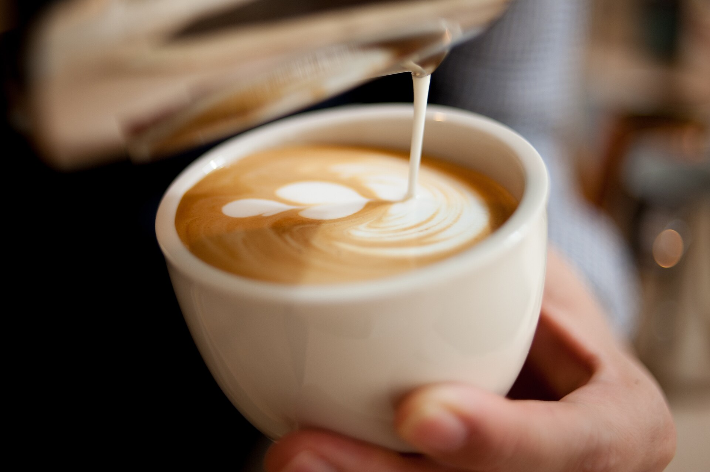
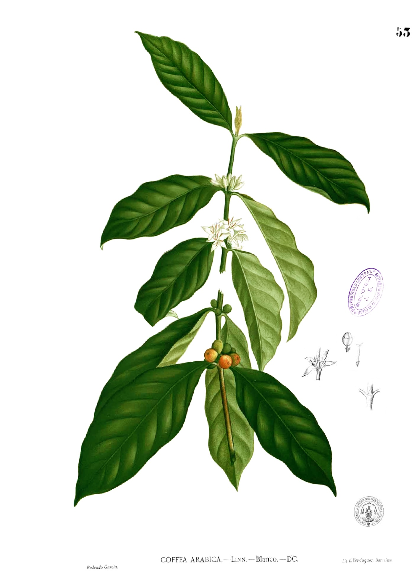
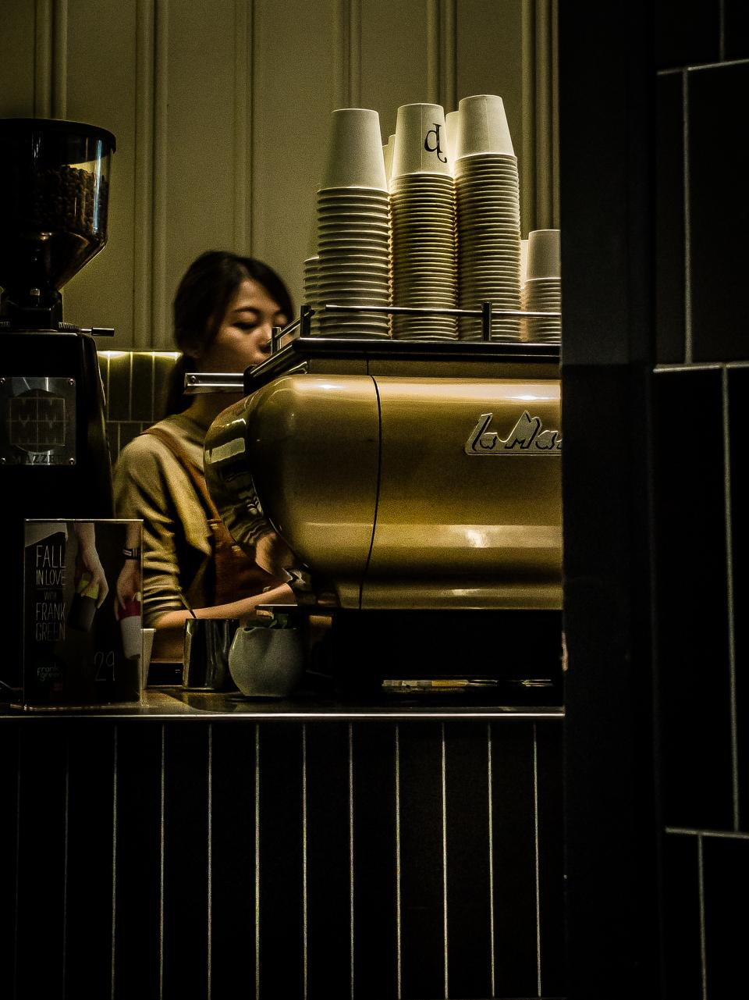
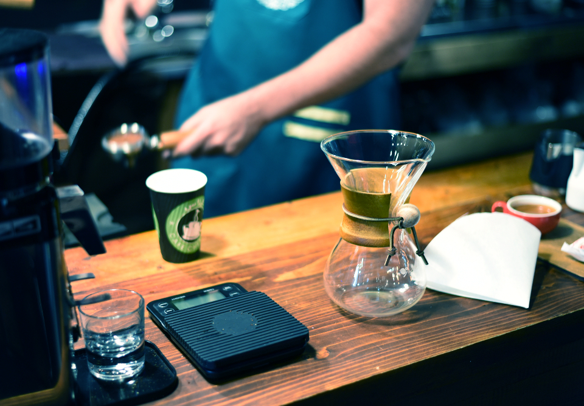
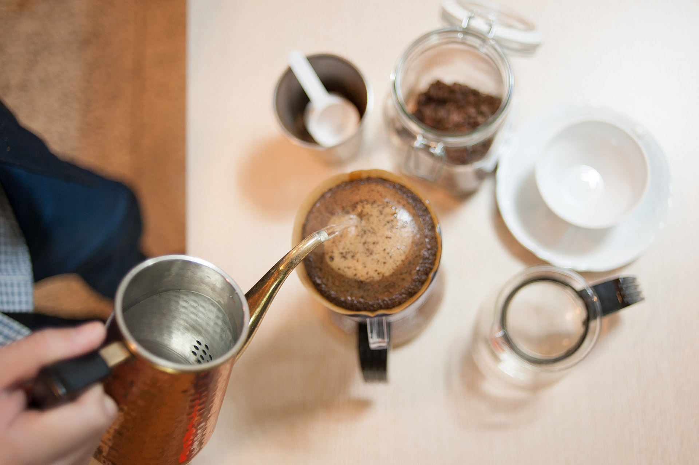
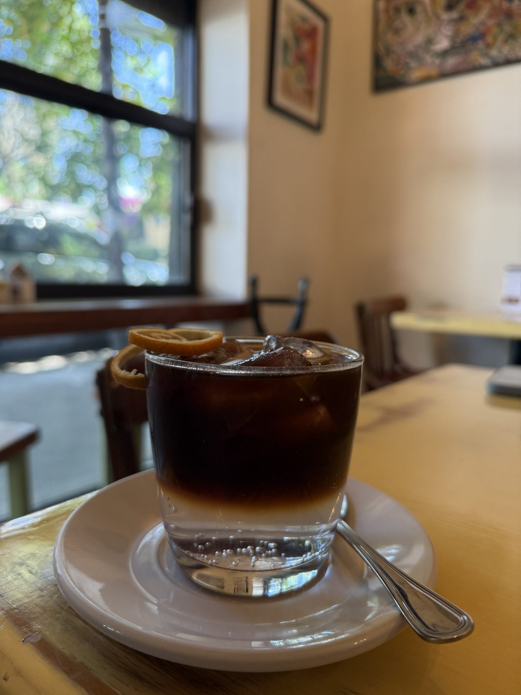
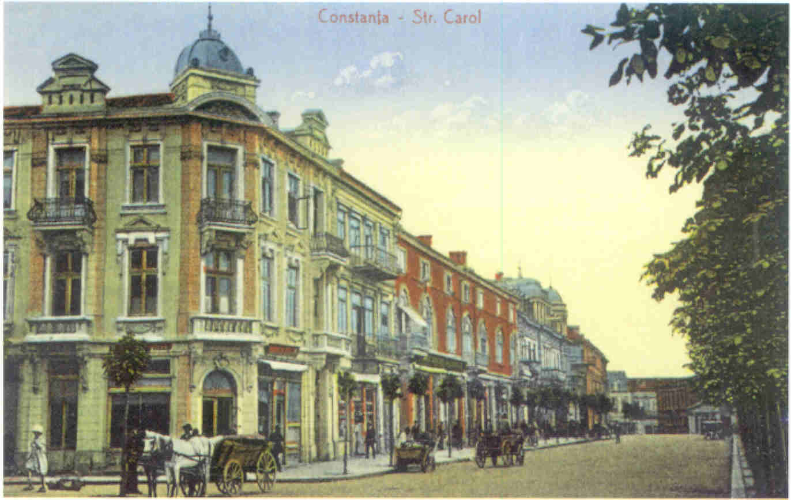
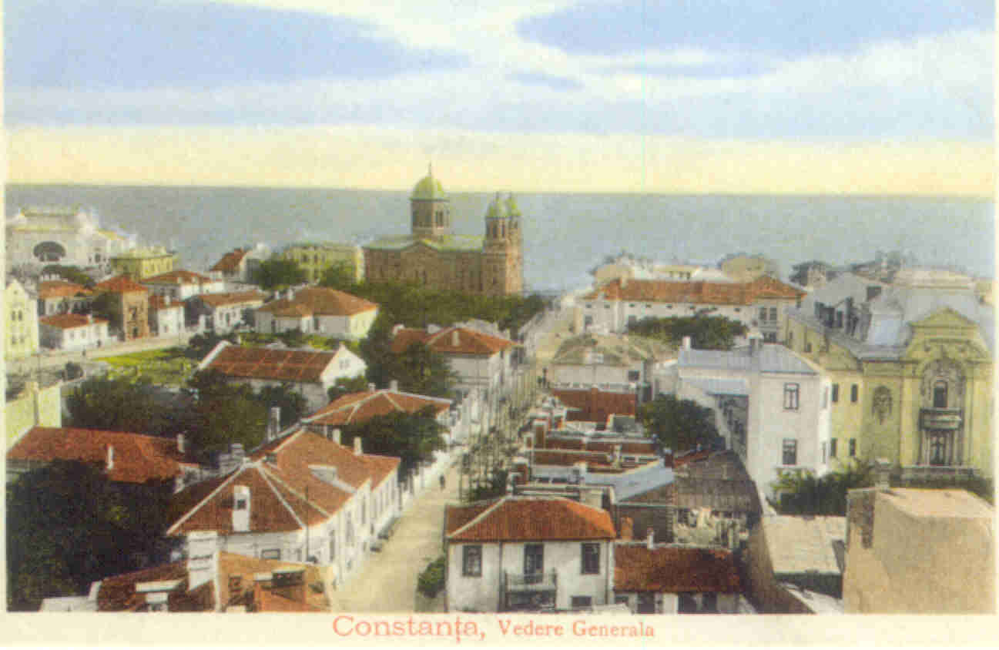

Cafea, lin.

Espresso, latte, pour-over și cold brew pe Strada Exemplului nr. 12, în Constanța. Luni–sâmbătă, 07:00–17:00.
Vezi meniulO cafenea mică pe strada Exemplului. Espresso la bar, pour-over când ai timp, cold brew când e cald.
Boaba Coffee face cafea de specialitate în Constanța: espresso băut în picioare, latte pentru o pauză mai lungă, pour-over urmărit cum curge, picătură cu picătură. Lângă cafea, patiserie din vitrină. Numele sună a ce promite: cafea, lin.

Coffea arabica, planta din care vine cafeaua. Planșă din Flora de Filipinas a lui Francisco Manuel Blanco, 1880–1883. Domeniu public.
Acum, la bar.
Cafeaua, de aproape.








Imagini ilustrative cu licență liberă, nu fotografii din local. Fotografiile Boaba Coffee se adaugă din panoul de administrare.
Ne vedem pe strada Exemplului.
La numărul 147, de luni până sâmbătă, de la 7 la 17. Duminica, închis.

900592 Constanța
- Luni–sâmbătă
- 07:00–17:00
- Duminică
- Închis
Program conform World Coffee Map. Confirmă programul de sărbători.

Constanța de sus, într-o carte poștală din 1909.
Harta interactivă se încarcă doar la cerere și conectează browserul la Google.
Un concept, spus deschis.
Acesta este un proiect demonstrativ. Cafeneaua, adresa, programul și telefonul sunt fictive. Paleta, fontul și textele sunt o propunere de design.
Imagini și film
Toate imaginile sunt ilustrative și nu arată localul sau produsele Boaba Coffee. „Latte art 3” și „Manual drip (pour-over) coffee” de Kim Sanso, CC0, Wikimedia Commons; „Barista Coffee” de Malidate Van, CC0, StockSnap; „Coffeehouse Bar” de Mike Wilson, CC0, StockSnap; „Cafe Glasses” de Habib Parvin, CC0, StockSnap; „A glass of cold brew coffee…” de Rita Robles Loaiza, CC0, WordPress Photo Directory; „Coffea arabica” de Francisco Manuel Blanco, domeniu public; cărțile poștale „Constanța, Strada Carol, 1910”, „Constanța, vedere generală, 1909” și „Constanța, portul, 1910”, domeniu public, Wikimedia Commons; filmul „Pour Over” de Lev Lazinskiy, CC BY-SA 4.0, Wikimedia Commons.